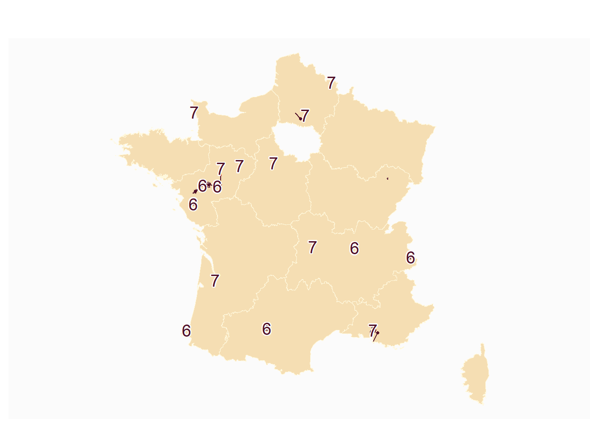
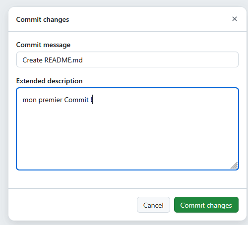
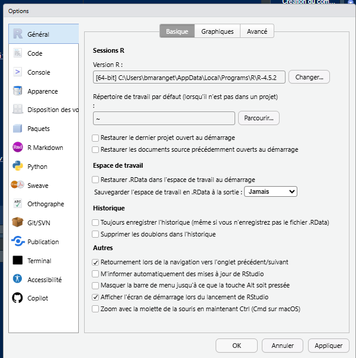
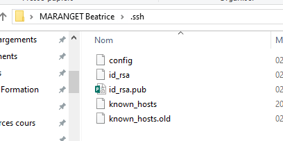

Code
data <- read.csv("data/codeINSEEetudiant.csv")
part1 <- data [,(1:3)]
part2 <- data [,c(6,4,5)]
nom <- c("prénom", "groupe", "code")
names(part1) <- nom
names(part2) <- nom
tot <- rbind(part1, part2)
tot <- tot [!is.na(tot$groupe),]Projet : reprendre la thématique ville pauvre - riche sous R en y incluant tous les traitements vus sous Arcgis.
Binômes : Distinguer 2 rôles technique et rédacteur, par groupe et zones géographiques proches par dpt
data <- read.csv("data/codeINSEEetudiant.csv")
part1 <- data [,(1:3)]
part2 <- data [,c(6,4,5)]
nom <- c("prénom", "groupe", "code")
names(part1) <- nom
names(part2) <- nom
tot <- rbind(part1, part2)
tot <- tot [!is.na(tot$groupe),]37 étudiants (43 communes)
Faire compléter le tableau
tot$dpt <- substring(tot$code,1,2)
table(tot$dpt, tot$groupe)
6 7
13 0 1
28 0 1
31 1 0
33 0 1
44 3 0
49 0 1
50 0 1
59 0 1
60 0 1
63 0 1
64 1 0
69 1 0
72 0 1
73 1 0
75 0 1
78 1 0
91 0 1
92 4 1
93 1 7
94 0 1
95 1 0
97 0 2première attribution : 44 / 92 / 93 / 93 + 95 / 92 + 94 etc …
on procéde par région
library(sf)Linking to GEOS 3.13.1, GDAL 3.11.4, PROJ 9.7.0; sf_use_s2() is TRUEregion <- st_read("data/region/regions-20180101.shp", quiet=T)
region <- st_transform(region, 2154)
region <- region [!region$code_insee %in% c("01", "02", "03","04","06","11"),]
idf <- region [region$code_insee == "11",]
drom <-region [region$code_insee %in% c("01", "02", "03","04","06"),]
commune <- st_read("data/cours5.gpkg", "commune", quiet = T)
joint <- merge(commune, tot, by = "code", all.x = T)
joint <- st_transform(joint, 2154)library(mapsf)
inter <- st_intersection(joint, region)
mf_map(region, col = "wheat", border = "cornsilk")
mf_map(inter, add = T)
mf_label(inter, var = "groupe", halo = T, overlap = F, cex = 1.2)
table(inter$groupe, inter$nom.1)
Auvergne-Rhône-Alpes Bourgogne-Franche-Comté Centre-Val de Loire
6 2 0 0
7 1 0 1
Hauts-de-France Normandie Nouvelle-Aquitaine Occitanie Pays de la Loire
6 0 0 1 1 3
7 2 1 1 0 2
Provence-Alpes-Côte d'Azur
6 0
7 12e attribution région Auvergne, Hauts, Pays de la Loire
Chaque groupe inscrit sa région / son dpt dans le tableau + un nom de groupe + les prénoms
Il s’agit de construire votre environnement de travail pour le projet de fin de semestre
A savoir :
La découverte de la plateforme data gouv et la fonction de ré-utilisation sera faite au cours prochain.
github.com
Uniquement les points 1 et 2, pas le point 3
Pour créer un fichier, il suffit de créer par exemple un readme
 et de faire son premier commit (= engagement)
et de faire son premier commit (= engagement)

Distinguer les deux : langage et IDE (Environnement de développement, integrated development environment)
Attention, paramétrer les historiques sinon cela va générer de gros fichiers encombrants.

A partir de Configuration et juste le protocole SSH
points de vigilance
La clé se positionne dans le répertoire .ssh de votre profil utilisateur

Sauvegarder l’ensemble du répertoire .ssh afin de le recopier sur les ordinateurs sur lesquels vous travaillez.
Puis, suivre Initialisation d’un projet R avec Git
distinguer le data frame et le vecteur
v1 <- c("ville1", "ville2")
v2 <- c("RN", "LFI")
df <- data.frame(ville = v1, vainqueur = v2)
df ville vainqueur
1 ville1 RN
2 ville2 LFIdf <- as.data.frame(v1,v2)Une fois le script enregistré il faut faire :
enregistrer les modifications = cocher les fichiers que l’on veut envoyer sur le serveur git
le commit (validation des modifications), mettre un message clair
le push